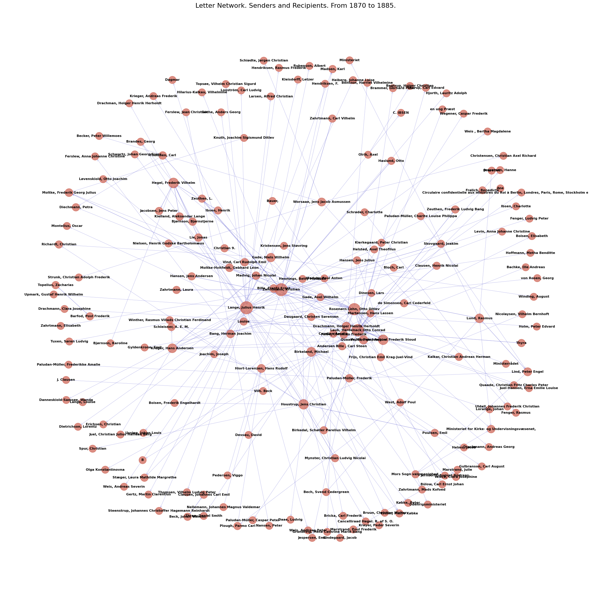
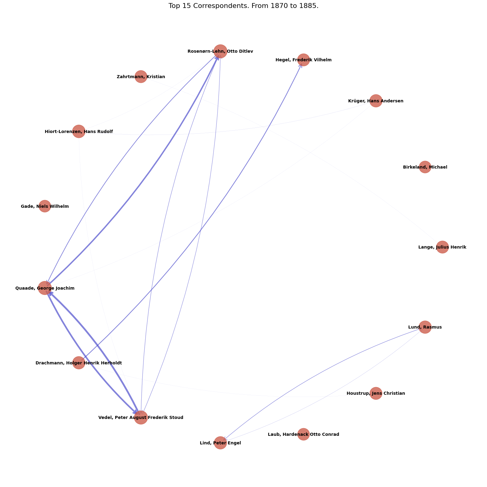

Explore Denmarks Letters (Danmarks Breve)#
Script Summary#
This notebook explores a dataset constructed from the XML sources behind the Royal Danish Library’s digital Danmarks Breve collection, which holds 13,000+ printed letters and metadata.
Steps:
Load the harmonised bibliographic dataset derived from the XML files and inspect schemas for key entities (
sender_st,recipiant_st,text_st,year_st).Build directed correspondence networks for selected time windows, compute centrality summaries, and visualise letter flows between prominent individuals.
Aggregate letters per sender and run TF–IDF analysis to surface each sender’s 15 most distinctive words.
Prepare helper tables (
_top_senders_df,sender_tfidf_top_words) for downstream analysis or export.
Outputs: Network statistics/plots, sender-level TF–IDF tables, and dataframes ready for further historical or linguistic study.
# Core libraries and configuration
import pandas as pd
import warnings
# Network analysis and plotting
import networkx as nx
import matplotlib.pyplot as plt
from sklearn.feature_extraction.text import TfidfVectorizer
# Suppress sklearn stop-word warnings triggered by OCR artefacts
warnings.filterwarnings('ignore', category=UserWarning, module='sklearn.feature_extraction.text')
# Read the data
dk_letters_st = pd.read_csv('Denmarks_letters_dataset.csv')
# Inspect the shape of the dataset
dk_letters_st.shape
(13516, 20)
# Inspect available columns
dk_letters_st.columns
Index(['url', 'sender', 'sender_st', 'recipiant', 'recipiant_st', 'geo_name',
'raw_date', 'raw_text', 'year_st', 'text_st', 'word_count',
'geo_name_st', 'xml_file_name', 'pubTitle', 'pubAuthor', 'pubPublisher',
'pubPublisher_st', 'pubPlace', 'pubPlace_st', 'pubDate'],
dtype='object')
# Review column data types
dk_letters_st.dtypes
url object
sender object
sender_st object
recipiant object
recipiant_st object
geo_name object
raw_date object
raw_text object
year_st float64
text_st object
word_count int64
geo_name_st object
xml_file_name object
pubTitle object
pubAuthor object
pubPublisher object
pubPublisher_st object
pubPlace object
pubPlace_st object
pubDate object
dtype: object
# Filter out rows with NaN in sender or recipient columns
dk_letters_filtered = dk_letters_st.dropna(subset=['sender_st', 'recipiant_st'])
# Create a subset of the data by selecting rows with values between two years
_from = 1870
_to = 1885
dk_letters_subset = dk_letters_filtered.query(f'year_st > {_from} and year_st < {_to}')
# Inspect the shape of the subset
dk_letters_subset.shape
(1236, 20)
Who wrote to whom? Network analysis with NetworkX#
First we filter the dataset to a specific period and build a directed graph where edges connect senders to recipients. We then inspect degree-based rankings and visualise the full network as well as a view of the top correspondents before moving into TF–IDF vocabulary analysis.
# Create a directed graph
G = nx.DiGraph()
# Add edges from sender to recipient
for _, row in dk_letters_subset.iterrows():
sender = row['sender_st']
recipient = row['recipiant_st']
# Add edge (if edge already exists, weight will be incremented)
if G.has_edge(sender, recipient):
G[sender][recipient]['weight'] += 1
else:
G.add_edge(sender, recipient, weight=1)
print(f"Network has {G.number_of_nodes()} nodes (people) and {G.number_of_edges()} edges (letter connections)")
Network has 186 nodes (people) and 226 edges (letter connections)
# Basic network statistics
print("Network Statistics:")
print(f"Number of nodes (people): {G.number_of_nodes()}")
print(f"Number of edges (letter connections): {G.number_of_edges()}")
print(f"Network density: {nx.density(G):.4f}")
# Top senders (out-degree)
top_senders = sorted(G.out_degree(), key=lambda x: x[1], reverse=True)[:10]
print("\nTop 10 Senders:")
for person, count in top_senders:
print(f" {person}: {count} letters sent")
# Top recipients (in-degree)
top_recipients = sorted(G.in_degree(), key=lambda x: x[1], reverse=True)[:10]
print("\nTop 10 Recipients:")
for person, count in top_recipients:
print(f" {person}: {count} letters received")
Network Statistics:
Number of nodes (people): 186
Number of edges (letter connections): 226
Network density: 0.0066
Top 10 Senders:
Lange, Julius Henrik: 31 letters sent
Zahrtmann, Kristian: 20 letters sent
Laub, Hardenack Otto Conrad: 17 letters sent
Rosenørn-Lehn, Otto Ditlev: 10 letters sent
Birkeland, Michael: 10 letters sent
Hegel, Frederik Vilhelm: 6 letters sent
Drachmann, Holger Henrik Herholdt: 6 letters sent
Houstrup, Jens Christian: 5 letters sent
Gade, Niels Wilhelm: 5 letters sent
Worsaae, Jens Jacob Asmussen: 5 letters sent
Top 10 Recipients:
Rosenørn-Lehn, Otto Ditlev: 15 letters received
Zahrtmann, Kristian: 10 letters received
Vedel, Peter August Frederik Stoud: 9 letters received
Laub, Hardenack Otto Conrad: 9 letters received
Hegel, Frederik Vilhelm: 8 letters received
Houstrup, Jens Christian: 8 letters received
Krüger, Hans Andersen: 7 letters received
Moltke, Frederik Georg Julius: 4 letters received
Lund, Rasmus: 4 letters received
Quaade, George Joachim: 3 letters received
# Visualize the full network (this might be dense)
plt.figure(figsize=(20, 20))
# Use spring layout for visualization
pos = nx.spring_layout(G, k=0.5, iterations=50, seed=42)
# Draw nodes sized by total degree (in + out)
node_sizes = [300 + (G.in_degree(node) + G.out_degree(node)) * 20 for node in G.nodes()]
# Draw the network
nx.draw_networkx_nodes(G, pos, node_size=node_sizes, node_color='#cd5f4e', alpha=0.7)
nx.draw_networkx_edges(G, pos, edge_color='#4e4ecd', alpha=0.5, arrows=True,
arrowsize=10, arrowstyle='->', width=0.5)
nx.draw_networkx_labels(G, pos, font_size=8, font_weight='bold')
plt.title(f'Letter Network. Senders and Recipients. From {_from} to {_to}.', fontsize=16)
plt.axis('off')
plt.tight_layout()
plt.show()

# Alternative visualization: Circular layout for top correspondents
top_n = 15
top_nodes_by_degree = sorted(G.nodes(), key=lambda x: G.in_degree(x) + G.out_degree(x), reverse=True)[:top_n]
G_top = G.subgraph(top_nodes_by_degree).copy()
plt.figure(figsize=(16, 16))
# Use circular layout
pos = nx.circular_layout(G_top)
# Node sizes
node_sizes = [800 + (G_top.in_degree(node) + G_top.out_degree(node)) * 40 for node in G_top.nodes()]
# Edge weights
edge_weights = [G_top[u][v]['weight'] for u, v in G_top.edges()]
max_weight = max(edge_weights) if edge_weights else 1
# Draw
nx.draw_networkx_nodes(G_top, pos, node_size=node_sizes, node_color='#cd5f4e', alpha=0.8)
nx.draw_networkx_edges(G_top, pos, edge_color='#4e4ecd', alpha=0.7,
arrows=True, arrowsize=20, arrowstyle='->',
width=[w/max_weight*4 for w in edge_weights],
connectionstyle='arc3,rad=0.1') # Curved edges
nx.draw_networkx_labels(G_top, pos, font_size=10, font_weight='bold')
plt.title(f'Top {top_n} Correspondents. From {_from} to {_to}.', fontsize=16)
plt.axis('off')
plt.tight_layout()
plt.show()

What did they write about? TF–IDF with scikit-learn#
We regroup letters by the top senders, assemble their combined texts, and apply TfidfVectorizer to surface the 15 most distinctive terms for each author. The resulting table spotlights vocabulary that sets the busiest correspondents apart within the chosen period.
# Subset the dataframe again to include only top senders
top_senders_df = dk_letters_subset[dk_letters_subset['sender_st'].isin(top_nodes_by_degree)]
#
# Combine all letters per sender to prepare TF-IDF input
_top_senders_df = top_senders_df.groupby('sender_st')['text_st'].agg(' '.join).reset_index()
# TF-IDF analysis: top 15 distinctive words per sender
texts = _top_senders_df['text_st'].fillna('')
with open('danish_stopwords_18_19_20c.txt') as f:
_danish_stopwords = f.read().split('\n')
danish_stopwords = [i.strip() for i in _danish_stopwords]
vectorizer = TfidfVectorizer(
stop_words=danish_stopwords,
max_df=0.85,
min_df=1,
ngram_range=(1, 1),
sublinear_tf=True
)
tfidf_matrix = vectorizer.fit_transform(texts)
feature_names = vectorizer.get_feature_names_out()
rows = []
for idx, sender in enumerate(_top_senders_df['sender_st']):
row = tfidf_matrix[idx]
if row.nnz == 0:
top_indices = []
else:
coo = row.tocoo()
order = coo.data.argsort()[::-1]
top_indices = coo.col[order][:15]
top_words = [feature_names[i] for i in top_indices]
while len(top_words) < 15:
top_words.append(None)
row_dict = {'sender_st': sender}
for rank, word in enumerate(top_words, start=1):
row_dict[f'word_{rank:02d}'] = word
rows.append(row_dict)
sender_tfidf_top_words = pd.DataFrame(rows)
sender_tfidf_top_words
| sender_st | word_01 | word_02 | word_03 | word_04 | word_05 | word_06 | word_07 | word_08 | word_09 | word_10 | word_11 | word_12 | word_13 | word_14 | word_15 | |
|---|---|---|---|---|---|---|---|---|---|---|---|---|---|---|---|---|
| 0 | Birkeland, Michael | birkeland | rigsarkivet | arkivet | bibl | kongl | 1613 | bruun | storthinget | verk | arkiver | daae | 1660 | throndhjem | assessor | gulbranson |
| 1 | Drachmann, Holger Henrik Herholdt | emmy | holger | kære | drachmann | derhjemme | nuvel | vilhelmine | literatur | familje | holgers | idetheletaget | justitsraad | cancelliraad | kommende | hegel |
| 2 | Gade, Niels Wilhelm | dryp | rée | rubenson | gade | sinfonie | richardt | winding | maries | hobro | judith | niels | im | wir | text | vaade |
| 3 | Hegel, Frederik Vilhelm | boghandlere | hegel | collett | honorar | lie | hilsener | handelen | bjørnson | ibsen | manuskriptet | arket | udsolgt | forlægge | oplag | kjærligste |
| 4 | Hiort-Lorenzen, Hans Rudolf | hiort | lorenzen | krüger | bismarck | keudell | regering | preussen | pligtforsømmelse | weserzeitung | hund | drøftet | kabinettet | statsministeren | sønderrives | tabes |
| 5 | Houstrup, Jens Christian | hostrup | hillerød | mynster | rønnov | hatting | eva | grundtvig | mynsters | poulsen | prokuratoren | nicolaysen | oehlenschläger | hennings | hauchs | digtning |
| 6 | Krüger, Hans Andersen | nordslesvig | menig | revision | ahlmann | elsasserne | lempet | høimodighed | nordslesvigere | quaade | tydskerne | tydskland | vælgeres | tjenesten | gengivelsen | tydske |
| 7 | Lange, Julius Henrik | kære | kleisdorff | weis | dietrichson | jul | kbhvn | aarhus | lübke | madrid | thorvaldsen | bonnat | akademiet | gøre | tuxen | henningsen |
| 8 | Laub, Hardenack Otto Conrad | laub | viborg | christen | juul | ethik | grundtvigianismen | christus | mynster | huus | martensen | gemakker | schelling | ethiken | guds | sacramenterne |
| 9 | Lind, Peter Engel | biskoppen | alters | valgmenigheden | absolution | skriftemaal | syndernes | forladelse | sakramente | folkekirken | lund | forskrifter | altergang | kirkens | ordinationsløfte | højærværdighed |
| 10 | Lund, Rasmus | nadveren | biskoppen | altergang | konfirmationen | folkekirkelige | skriftemaalet | højærværdighed | skriftemaal | nadverbordet | provsten | valgmenigheden | altergangen | barnets | forladelse | menighedens |
| 11 | Quaade, George Joachim | quaade | gesandt | bemeldte | herr | kaiser | excellences | statssecretairen | omhandlede | meer | vedel | vedels | vien | kaiseren | heydebrand | fyrst |
| 12 | Rosenørn-Lehn, Otto Ditlev | rosenørnlehn | directeur | ges | gesandt | pragerfredens | depeche | regering | udenrigsminister | dmk | slesvigske | koncept | cette | keis | vedels | quaade |
| 13 | Vedel, Peter August Frederik Stoud | quaades | vedel | quaade | gesandt | decazes | kammerherre | heydebrand | sml | kriegers | regering | berlin | frijs | marskallen | baron | slesv |
| 14 | Zahrtmann, Kristian | civita | dantino | malt | leonora | skøndt | amalfi | christina | athen | sora | jerndorff | lovisa | siena | haslund | rønne | modeller |
Other studies#
The dataset invites several complementary lines of inquiry beyond the current network and TF–IDF exploration:
Compare the TF–IDF signatures with known biographical information about the letter writers to assess whether distinctive vocabulary aligns with documented interests or roles.
Select alternative cohorts of correspondents (e.g. minor figures, female authors, specific professions) and examine whether their lexical profiles differ from the initial top senders.
Investigate structural features such as average letter length per sender or per decade to see who writes longer or more concise messages.
Experiment with sentiment or emotion analysis to gauge tone shifts across time, geography, or correspondent pairs.
Map the geographic distribution of letters using
geo_name_stto identify regional hubs, travel patterns, or networks of influence.